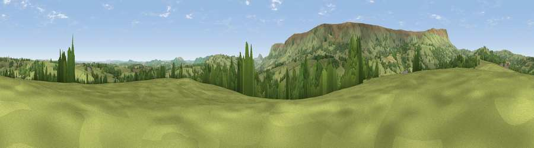

Viewpoint near Michaelchurch Escley
#16891 in England · top 48% of its area beats it · near Michaelchurch EscleyWhere it is
The exact computed spot (SO 31925 32225). Click the marker for map links.
The view, rendered

A 360° render of this exact spot computed from the terrain model, tree cover and land cover — summer colours, afternoon light, calibrated against photographs of famous viewpoints. Real trees, hedges and buildings will differ in detail.
The panorama
Grey silhouette: terrain skyline in each direction (720 bearings, Earth curvature and refraction included). Dashed green: skyline with trees (+15 m) and buildings (+8 m) as obstacles. Blue strip: how far the ground is visible on each bearing.
Where the view opens
Wedge length = distance to the farthest visible ground on that bearing (vegetation-aware). Rings at 10, 25 and 50 km.
What fills the view
82% grassland · 16% woodland · 2% cropland
Angular shares of the visible panorama (visual magnitude), not map area. Landscape diversity 0.24 (0–1 Shannon).
Key numbers
More beautiful places nearby
The staircase of upgrades: each row has a higher view potential than everything closer. Driving times are estimates from straight-line distance, calibrated against real road routing — check an actual route before setting out.
| Place | Direction | Drive | Score |
|---|---|---|---|
| Viewpoint near Longtown | SSW · 2 km | ~5 min | 57.6 |
| Viewpoint near Longtown | SW · 4 km | ~8 min | 76.9 |
| Viewpoint near Longtown | SW · 4 km | ~9 min | 78.7 |
| Viewpoint near Longtown | SSW · 5 km | ~10 min | 79.0 |
| Viewpoint near Clodock | SSW · 5 km | ~11 min | 79.6 |
| Black Hill | WNW · 5 km | ~11 min | 79.8 |
| Viewpoint near Craswall | WNW · 9 km | ~17 min | 81.5 |
| Garway Hill | ESE · 14 km | ~25 min | 84.6 |
51.98429, -2.99266 · source: screening · position refined by local search. Computed location — check access rights before visiting.